library(astsa)1 Lecture 1
2 Welcome!
2.1 Agenda
10:10 Introductions
10:30 Course Rhythm/Roadmap
10:45 Syllabus
11:00 R Setup
11:15 Activity
11:45 Introduction to Time Series Models
Extra time: Get started on Exercises
2.2 Introductions
Arrange yourselves into groups of 3-4 and share the following:
Name
Major
Whether you spend more time thinking about the past or the future
Whether you are more certain when you think about the past or the future
Please be prepared to share summary data with the class!
2.3 About Me (Professional)
Cal Poly SLO B.S. in Statistics and Pure Math
PhD (and MA) in Statistics from Rice University
Expertise: Spatial/Spatiotemporal Statistics (specifically spatial weight matrices)
Also did graduate certificate in teaching and learning
1.5 years authoring online interactive course material for zyBooks/Wiley (EdTech portion Higher Education industry)
1.5 years managing a team of Statistics authors at zyBooks/Wiley
1.5 years as Research Scientist (wastewater epidemiology) at Rice University
2.4 Teaching Philosophy
Minimize yapping
Promote collaboration
Provide varied opportunities for feedback
2.5 Course Rhythm
Assignments due Monday nights at Midnight (11:59:59 PM)
New assignments posted Mondays at 5pm
Quizzes due Thursday nights at midnight
One Midterm on Wednesday October 23, in class
One cumulative final exam
Section 1 (10am): Wednesday, December 11 from 10am-1pm
Section 2 (2pm): Friday, December 13 from 1pm-4pm
2.6 Syllabus
3 Software Setup
3.1 Installing R
Select your operating system
Follow the download instructions
3.2 Installing RStudio
Step 2 should have a clickable link with your operating system (auto-detected)
Follow the download instructions
3.3 Getting Started
In R Studio, Click File –> New –> Quarto Document
Title it Lecture 1 Notes
Delete the template material
Add setup chunk
4 Activity
4.1 Group time!
Split into groups of 4, I will come around and assign an example to you
In your quarto document, create a heading with a title of your example and “Equations” and “Visualizatons”
Read over the description of the example (access the book through Canvas)
install and load theastsapackage.Copy the R code from https://github.com/nickpoison/tsda/blob/main/Rcode.md#chapter-1
Run the R code and verify whether you can reproduce the figure from the text
Write down a research question that could be answered using the time series data for your example
4.2 Example 1.1 (Quarterly Earnings)
Code
par(mfrow=2:1)
tsplot(jj, ylab="QEPS", type="o", col=4, main="Johnson & Johnson Quarterly Earnings")
tsplot(log(jj), ylab="log(QEPS)", type="o", col=4)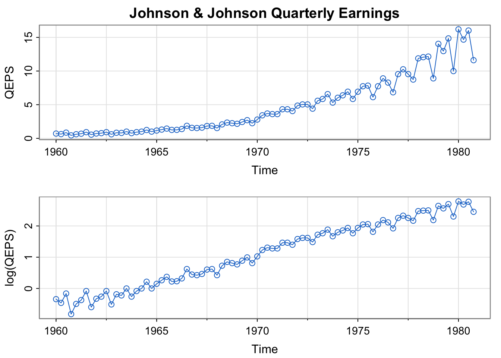
4.3 Example 1.2 (Climate Change)
Code
tsplot(cbind(gtemp_land,gtemp_ocean), spaghetti=TRUE, col = astsa.col(c(2,4), .5),
lwd=2, type="o", pch=20, ylab="Temperature Deviations", main="Global Warming")
legend("topleft", col=c(2,4), lty=1, lwd=2, pch=20, bg="white",
legend=c("Land Surface", "Sea Surface"))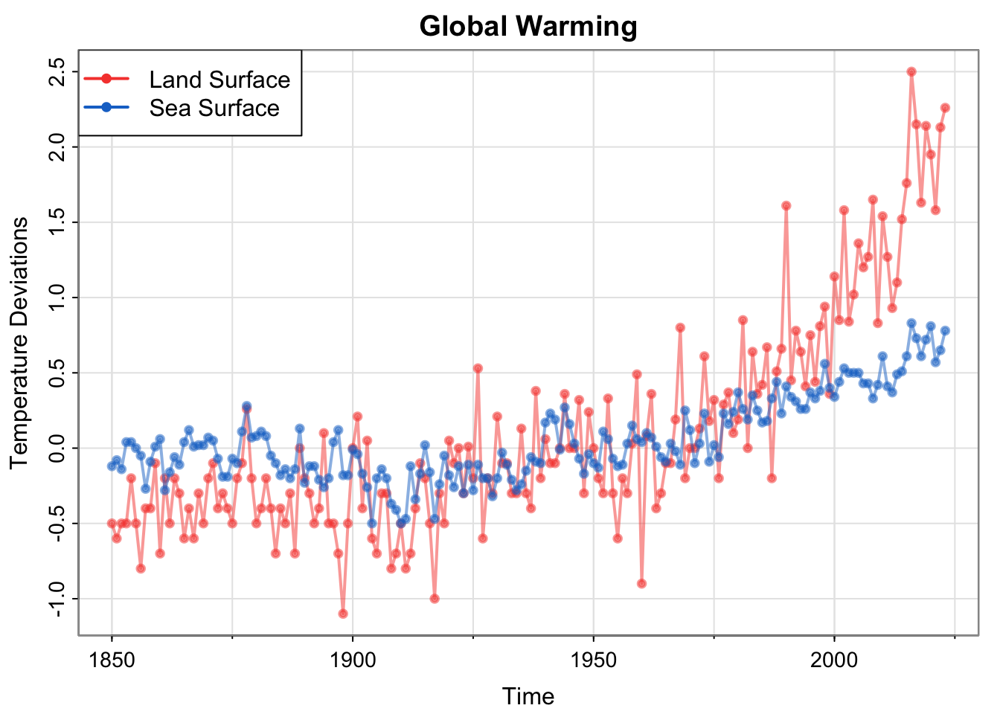
4.4 Example 1.3 (Dow Jones Industrial Average)
Code
library(xts) # install.packages("xts") if you don't have it already Loading required package: zoo
Attaching package: 'zoo'The following objects are masked from 'package:base':
as.Date, as.Date.numericCode
djia_return = diff(log(djia$Close))[-1]
#par(mfrow=2:1)
plot(djia$Close, col=4)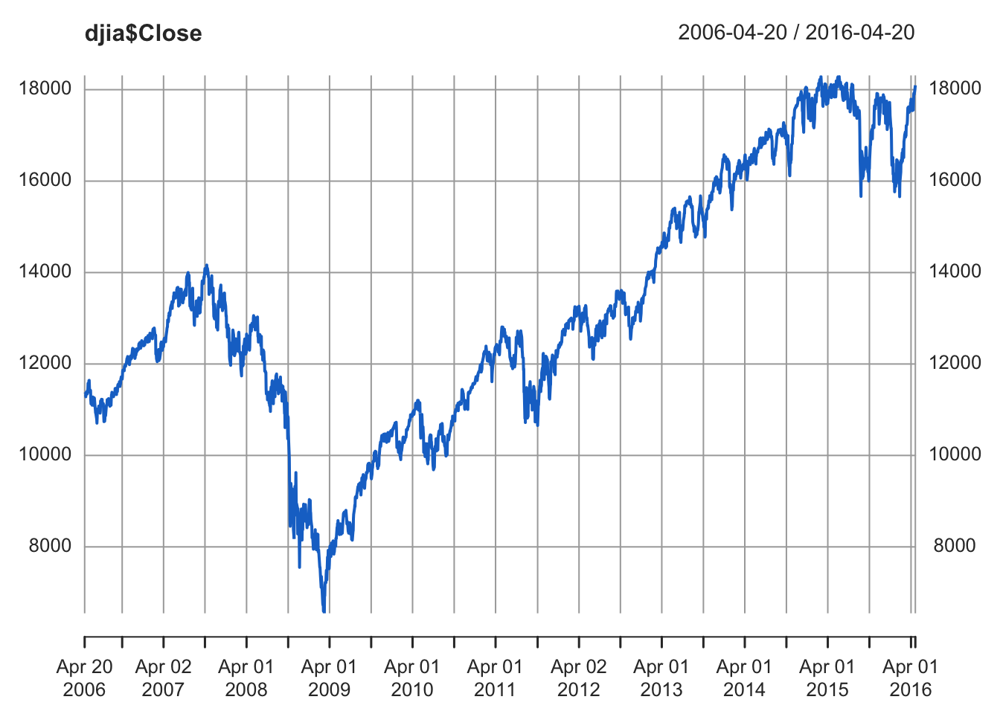
Code
plot(djia_return, col=4)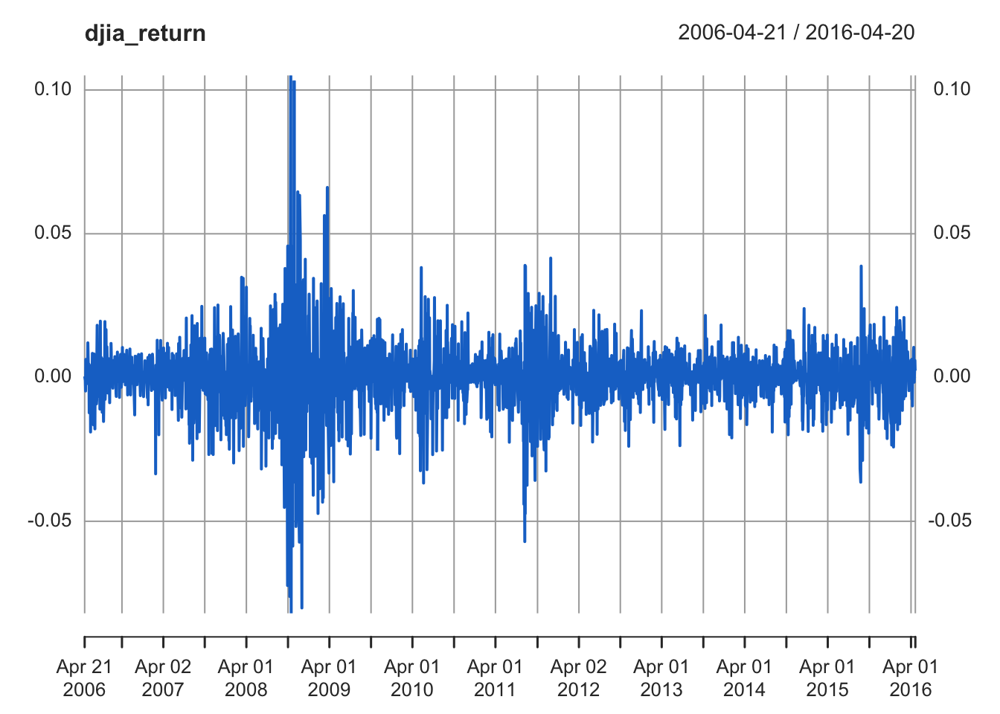
Code
tsplot(diff(log(gdp)), type="o", col=4) # using diff log
points(diff(gdp)/lag(gdp,-1), pch="+", col=2) # actual return
4.5 Example 1.4 El Niño
Code
par(mfrow = c(2,1))
tsplot(soi, ylab="", xlab="", main="Southern Oscillation Index", col=4)
text(1970, .91, "COOL", col=5)
text(1970,-.91, "WARM", col=6)
tsplot(rec, ylab="", main="Recruitment", col=4) 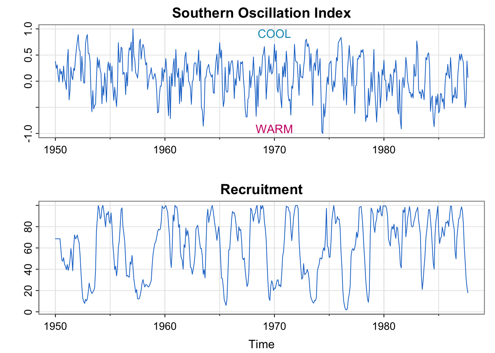
4.6 Example 1.5 (Predator-Prey Interactions)
Code
tsplot(cbind(Hare,Lynx), col = astsa.col(c(2,4), .6), lwd=2, type="o", pch=c(0,2),
spaghetti=TRUE, ylab=expression(Number~~~(""%*% 1000)))
legend("topright", col=c(2,4), lty=1, lwd=2, pch=c(0,2), legend=c("Hare", "Lynx"), bty="n")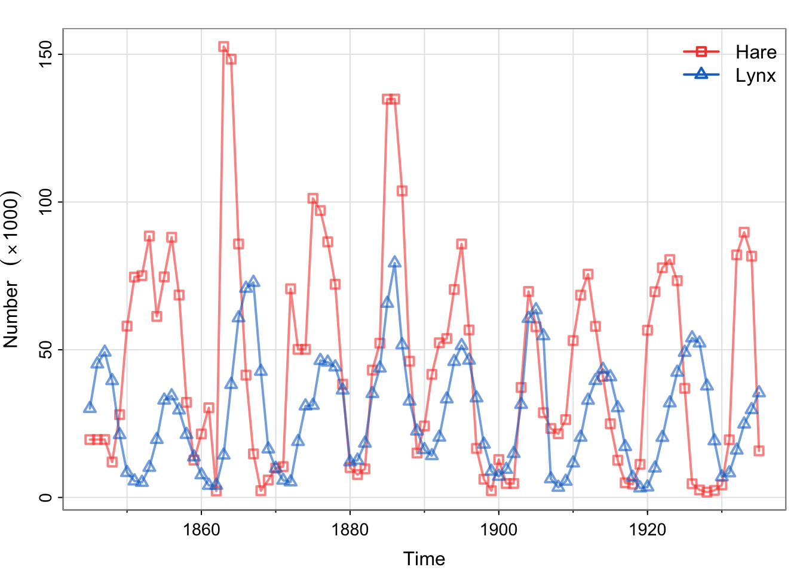
4.6.1 Cute animal pictures


4.7 Example 1.6 fMRI Imaging
Code
par(mfrow=c(3,1))
x = ts(fmri1[,4:9], start=0, freq=32) # data
names = c("Cortex","Thalamus","Cerebellum")
u = ts(rep(c(rep(.6,16), rep(-.6,16)), 4), start=0, freq=32) # stimulus signal
for (i in 1:3){
j = 2*i-1
tsplot(x[,j:(j+1)], ylab="BOLD", xlab="", main=names[i], col=5:6, ylim=c(-.6,.6),
lwd=2, xaxt="n", spaghetti=TRUE)
axis(seq(0,256,64), side=1, at=0:4)
#lines(u, type="s", col=gray(.3))
}
mtext("seconds", side=1, line=1.75, cex=.9)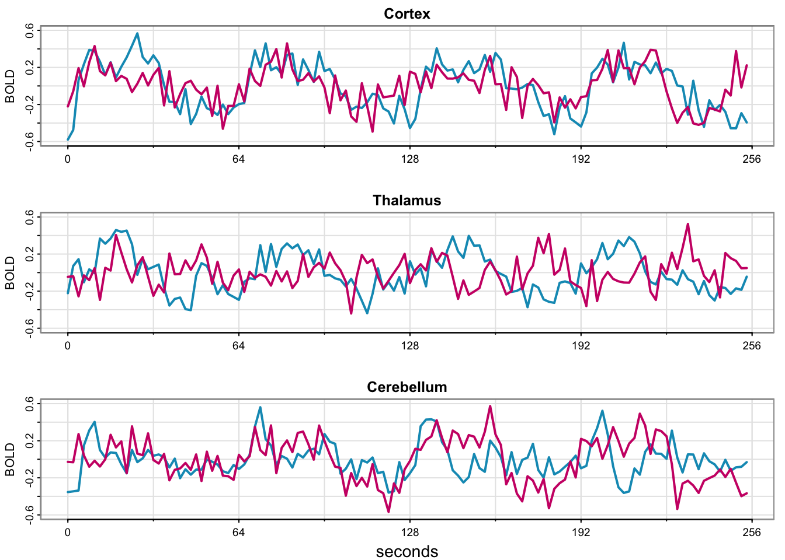
Code
par(mfrow=c(3,1))
x = ts(fmri1[,4:9], start=0, freq=32) # data
names = c("Cortex","Thalamus","Cerebellum")
u = ts(rep(c(rep(.6,16), rep(-.6,16)), 4), start=0, freq=32) # stimulus signal
for (i in 1:3){
j = 2*i-1
tsplot(x[,j:(j+1)], ylab="BOLD", xlab="", main=names[i], col=5:6, ylim=c(-.6,.6),
lwd=2, xaxt="n", spaghetti=TRUE)
axis(seq(0,256,64), side=1, at=0:4)
lines(u, type="s", col=gray(.3))
}
mtext("seconds", side=1, line=1.75, cex=.9)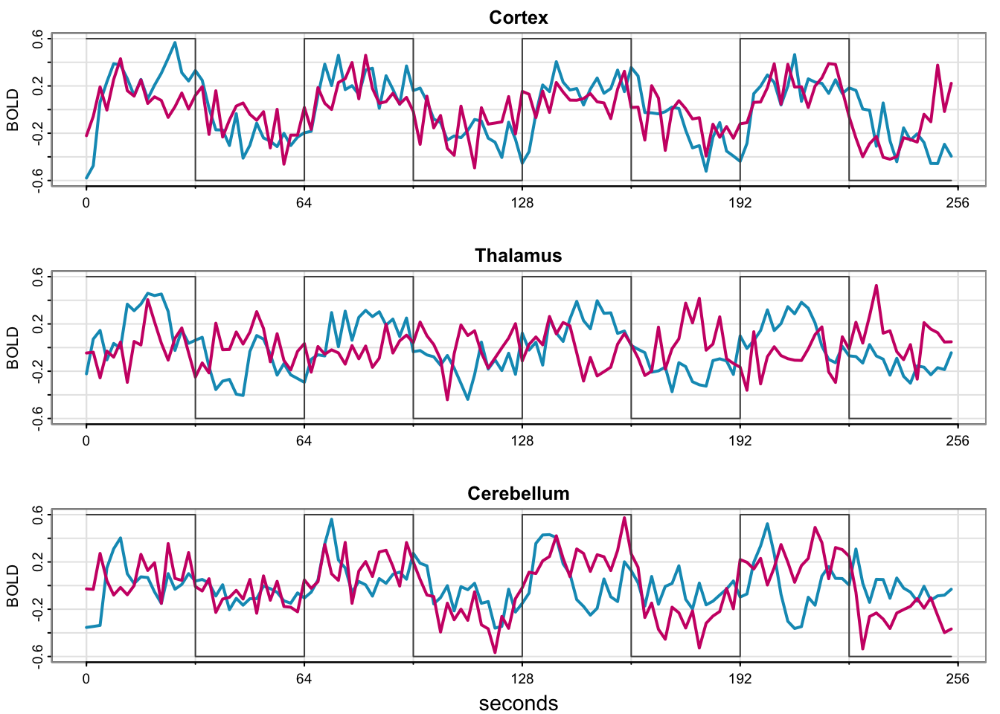
5 Introduction to Time Series Models
5.1 White Noise
in general, a collection of random variables \(w_t\)
uncorrelated
mean 0, variance \(\sigma_w^2\)
denoted \(w_t \sim wn(0, \sigma_w^2)\)
for us, usually independent and identically distributed (i.i.d.) normal
- \(w_t \sim \text{iid } N(0, \sigma_w^2)\)
5.2 Plotting White Noise
Which example does this bear the most resemblance to?
Code
w <- rnorm(500, 0, 1)
plot(w, type = "l", col = "blue", xlab = "t (order of sampling)")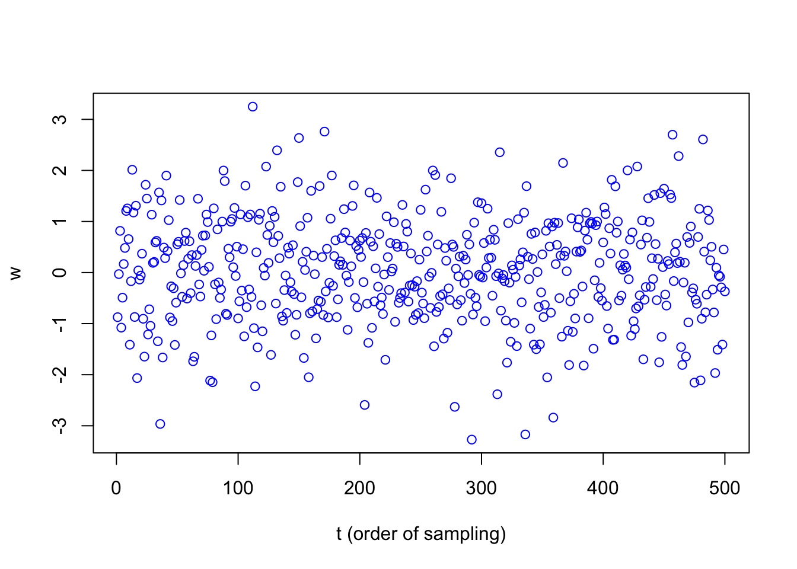
5.3 What White Noise isn’t
serially correlated – no temporal structure
smooth – “nice” trend/temporal structure
How can we build this “nice” structure into the model?
5.4 Moving Averages, Smoothing, and Filtering
Replace \(w_t\) with an average of its current value and two previous values:
\[ v_t = \frac{1}{3}(w_{t-2} + w_{t-1} + w_{t}) \]
Why do we divide by 3?
If \(w_t \sim \text{iid } N(0, \sigma_w^2)\), what is the distribution of \(v_t\)?
Why only the previous two values? Why not one in the past and one in the future?
5.5 Plotting a Moving Average
Code
v = stats::filter(w, sides = 2, filter = rep(1/3, 3))
v_alt = stats::filter(w, sides = 1, filter = rep(1/3,3))
par(mfrow=2:1)
tsplot(v, ylim = c(-3, 3), col = 4, main="moving average")
tsplot(v_alt, ylim = c(-3, 3), col = 4, main="moving average")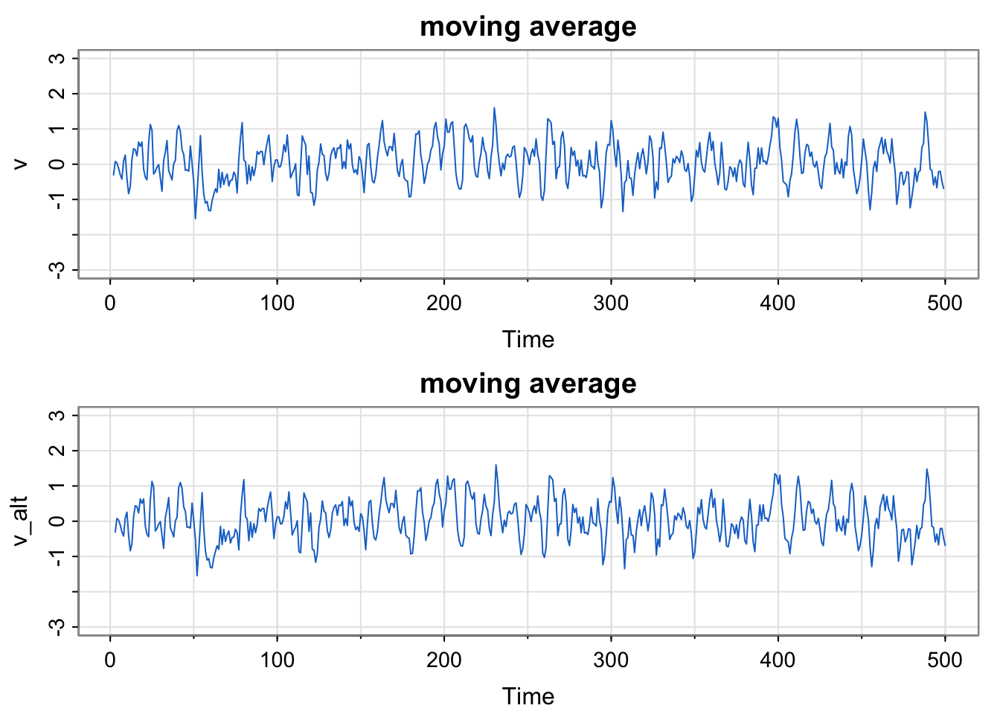
Compare this moving average to the SOI and Recruitment series. How do they differ?
5.6 Autoregressions
Starting with white noise \(w_t\), consider the equation:
\[ x_t = 1.5x_{t-1} - 0.75x_{t-2} + w_t \]
a “second-order equation” (why?)
A regression of the current value \(x_t\) of a time series as a function of the past two values of the series
recall (multiple) regression of \(Y\) on \(X = (X_1, X_2)\) is \(Y = \beta_0 + \beta_1X_1 + \beta_2X_2 + \varepsilon\) and compare to autoregression formula above
See (or hear) details in textbook page 11
5.7 Plotting Autoregressions
Code
set.seed(90210)
w = rnorm(250 + 50) # 50 extra to avoid startup problems
x = filter(w, filter=c(1.5,-.75), method="recursive")[-(1:50)]
tsplot(x, main="autoregression", col=4)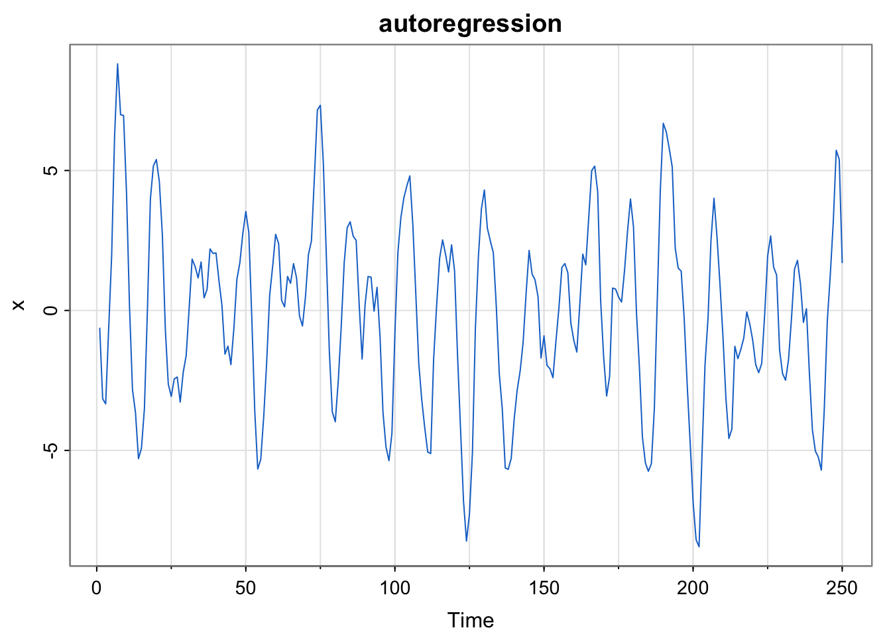
5.8 Random Walk with Drift
Again starting with white noise \(w_t \sim wn(0, \sigma^2_2)\), consider the time series
\[ x_t = \delta + x_{t-1} + w_t \]
This is called the “random walk with drift” model.
\(\delta\) is the drift term (\(\delta = 0\) corresponds to “random walk”- no drift)
initial condition \(x_0 = 0\)
Can be rewritten
\[ x_t = \delta t + \sum_{j=1}^t w_j \]
5.9 Plotting a Random Walk with Drift
Code
set.seed(314159265) # so you can reproduce the results
w = rnorm(200) ## Gaussian white noise
x = cumsum(w)
wd = w +.3
xd = cumsum(wd)
tsplot(xd, ylim=c(-2,80), main="random walk", ylab="", col=4)
clip(0, 200, 0, 80)
abline(a=0, b=.3, lty=2, col=4) # drift
lines(x, col=6)
clip(0, 200, 0, 80)
abline(h=0, col=6, lty=2)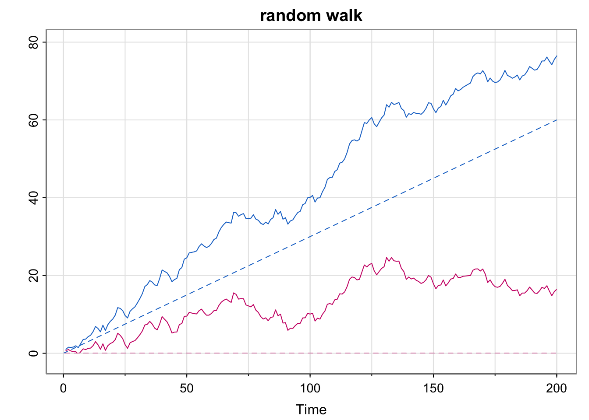
5.10 Signal Plus Noise
Consider the model:
\[ x_t = 2\cos(2\pi\frac{t + 15}{50}) + w_t \]
\(2\cos(2\pi\frac{t + 15}{50})\) is the signal
\(w_t\) is the noise
5.11 Plotting Signal Plus Noise (two scenarios)
Code
# cs = 2*cos(2*pi*(1:500)/50 + .6*pi) # as in the text
cs = 2*cos(2*pi*(1:500+15)/50) # same thing
w = rnorm(500,0,1)
par(mfrow=c(3,1))
tsplot(cs, ylab="", main = expression(x[t]==2*cos(2*pi*t/50+.6*pi)))
tsplot(cs + w, ylab="", main = expression(x[t]==2*cos(2*pi*t/50+.6*pi)+N(0,1)))
tsplot(cs + 5*w, ylab="", main = expression(x[t]==2*cos(2*pi*t/50+.6*pi)+N(0,25)))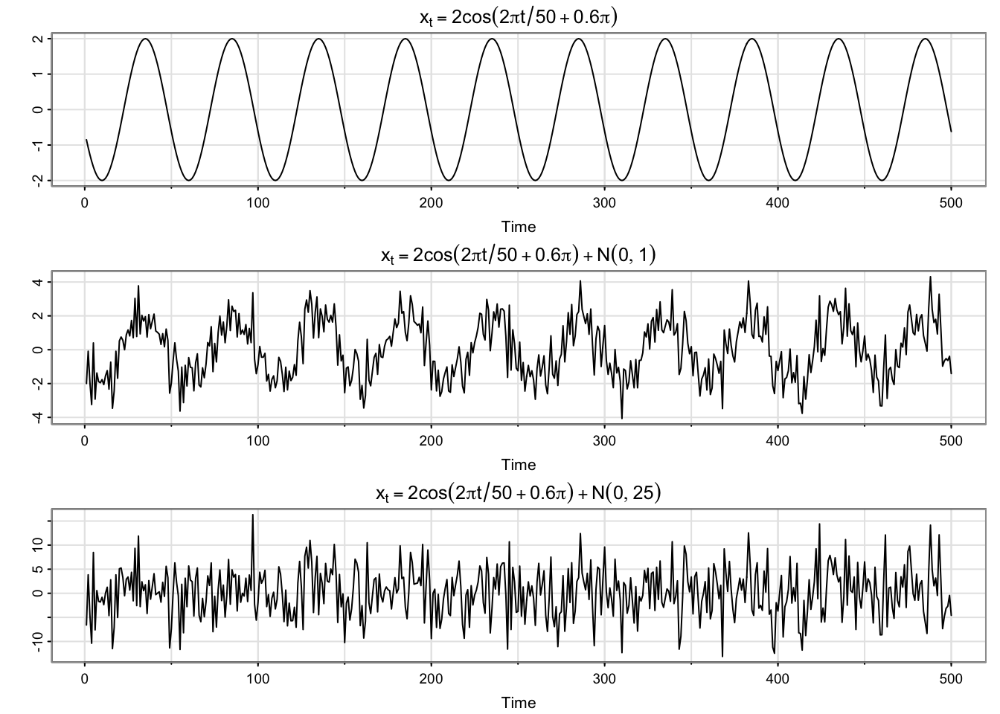
5.12 Next Time
Exercises at the end of chapter 1
Start Chapter 2
- Review definition of covariance, correlation, expected value, and variance (good use of AI– prompt then Wikipedia?)